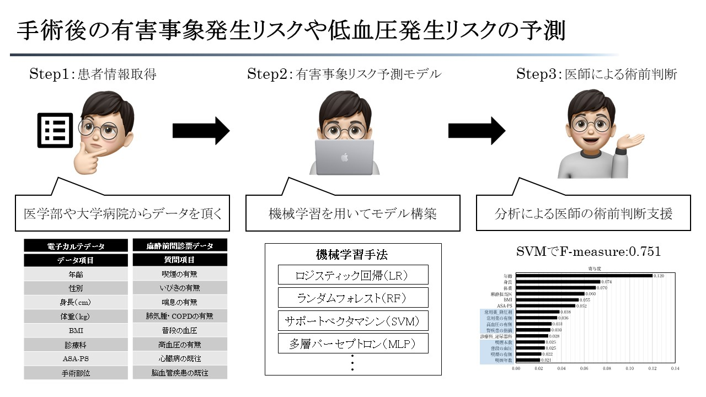

MDM班とは
これまで活用されて来なかった医療データに着目し、データを解析することで新たな知見を得ます。 そして、機械学習やディープラーニングなどの技術を活用することで、医師の意思決定を支援するなど臨床に還元します。
現在は電子麻酔記録データを解析し、手術後に悪影響を及ぼす術中の低血圧発生予測や、麻酔の最適な投与量を予測する研究を 慶應義塾大学医学部麻酔学教室と共同で行っています。
MDM班イメージ
MDM班メンバー（2022年度版）
医学部との共同プロジェクトです。医学部からの手術データなどを解析し、医師とディスカッションを通して医療課題の解決を行なっています。 統計や機械学習などデータ分析に関する様々なスキルを得ることができ、成長できる機会がたくさんあります。
主に機械学習を用いて研究している班です．指導教官だけでなく医師や訪問助教の先生と話す機会があり，多くの方に支えてもらいながら良い環境で研究できています！